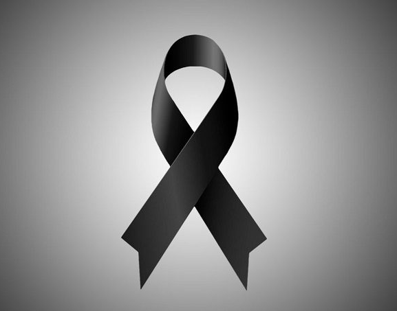
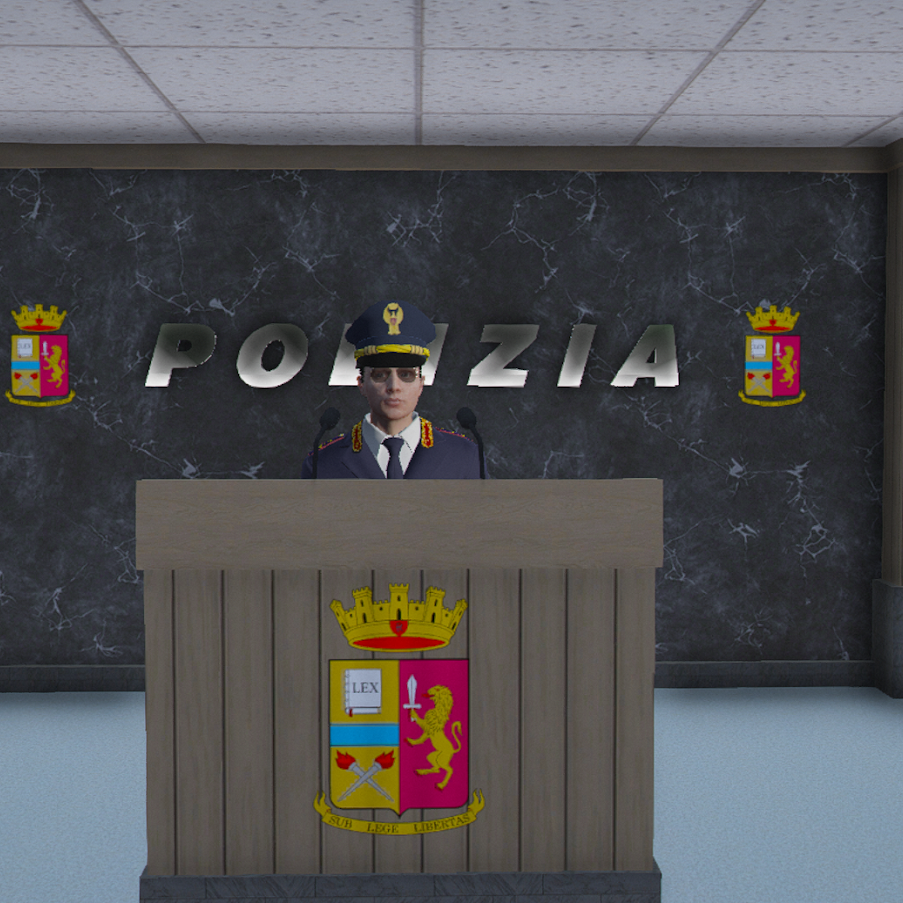

La Polizia di Stato è in lutto per la scomparsa di Derek Morgan
Oggi, 11 maggio 2025, la Polizia di Stato piange la scomparsa del nostro caro collega Derek Morgan. Dopo aver lottato con tutte le sue forze fino all'ultimo momento, purtroppo non ce l'ha fatta.

La Polizia di Stato è in lutto per la scomparsa di Derek Morgan
Oggi, 11 maggio 2025, la Polizia di Stato piange la scomparsa del nostro caro collega Derek Morgan. Dopo aver lottato con tutte le sue forze fino all'ultimo momento, purtroppo non ce l'ha fatta.
Con la sua perdita, la Polizia non perde solo un valido agente, ma un amico, un fratello, una presenza sempre pronta a sostenere e a combattere ogni difficoltà con impegno e determinazione. Derek Morgan è stato un esempio di dedizione e professionalità, lasciando un segno indelebile in tutti coloro che hanno avuto l'onore di lavorare al suo fianco.
Alla sua famiglia e ai suoi cari va il nostro più profondo cordoglio e la vicinanza di tutto il Corpo. La sua memoria continuerà a vivere nei cuori di chi lo ha conosciuto e stimato.
Cambio Dirigenti in Questura di Roma
Cambio Dirigenti in Questura di Roma
Oggi, 6 Luglio 2024 il Vice Questore Marco Ferri è stato nominato Questore della Questura di Roma col grado di Dirigente Generale.
Il Dirigente Generale della Polizia di Stato, Marco Ferri, si è laureato in Giurisprudenza all'università di Roma. Nel 2021 ha partecipato all'80° concorso per commissari, vincendo il concorso nel 2023. Successivamente è stato trasferito a Roma con l'incarico di Dirigente generale di Pubblica Sicurezza.
Giuramento del Corpo della Polizia di Stato
Giuramento del Corpo della Polizia di Stato
Nella giornata di oggi 13 Aprile 2024 si è svolto il Giuramento del Corpo della Polizia di Stato presso la Questura di Roma.
I nuovi agenti hanno giurato fedeltà alla Repubblica Italiana e si sono impegnati a servire i cittadini con dedizione e professionalità.
La cerimonia si è svolta alla presenza del Questore Marco Ferri e di tutti i Dirigenti del Corpo.

Cambio Dirigenti in Questura di Roma
Cambio Dirigenti in Questura di Roma
Oggi, 5 Aprile 2024 il Commissario Matteo Andolfi è stato nominato Questore della Questura di Roma col grado di Primo Dirigente.
Matteo Andolfi, è Laureato in giurisprudenza presso l'Università di Pavia, dopo aver conseguito la Laurea con il massimo dei voti, si è iscritto al concorso per Commissari, che ha vinto brillantemente. Nel 2020, è stato nominato dirigente dell'Ufficio Volante di Pavia, dove ha svolto il suo incarico con grande impegno e professionalità. Nel 2024, è stato trasferito a Roma con l'incarico di Primo Dirigente della Polizia di Stato.
Cerimonia degli Onori alla Polizia di Stato
Cerimonia degli Onori alla Polizia di Stato
In data odierna si è svolta la cerimonia di conferimento degli onori e delle decorazioni agli agenti che si sono distinti per atti di coraggio e dedizione al servizio.
La Questura di Roma ha voluto riconoscere il valore e l'impegno di questi uomini e donne che ogni giorno garantiscono la sicurezza dei cittadini.